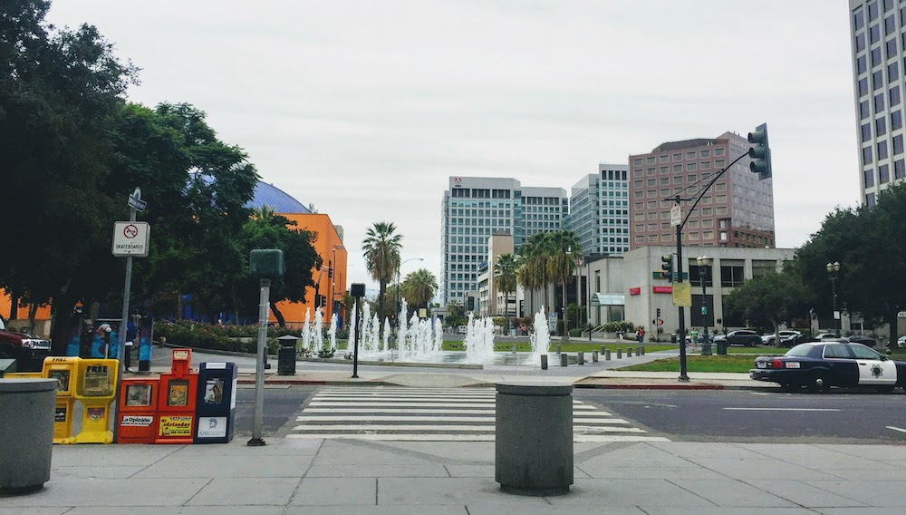
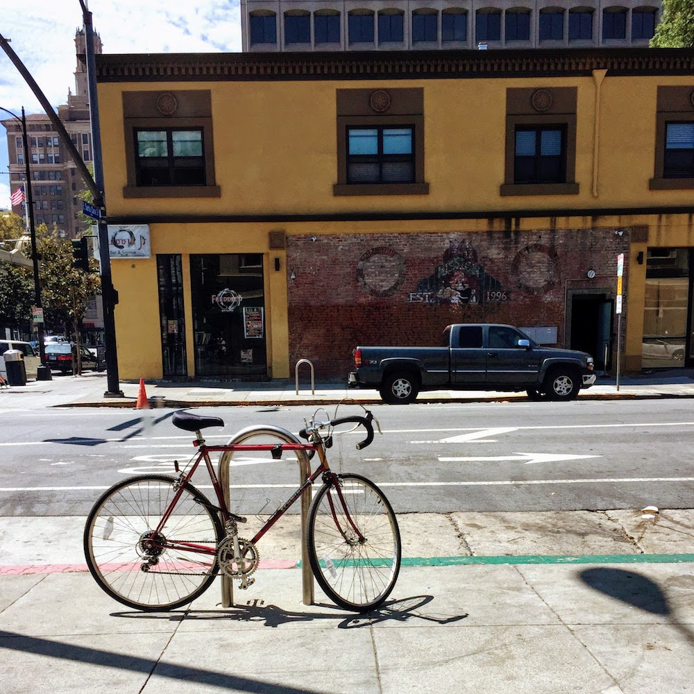
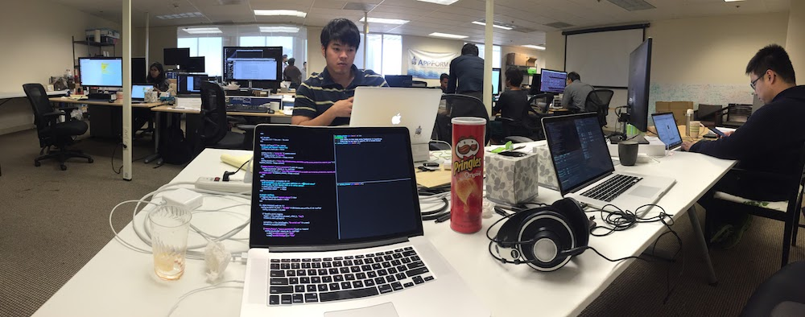
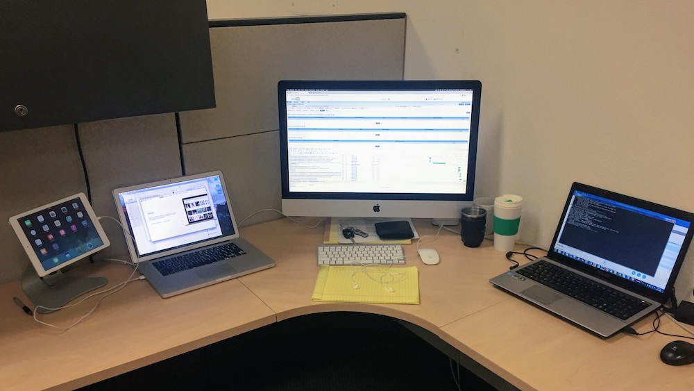
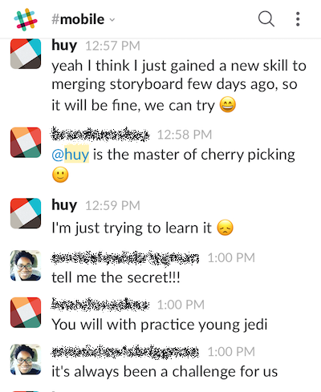
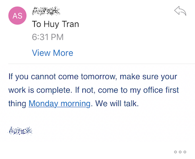
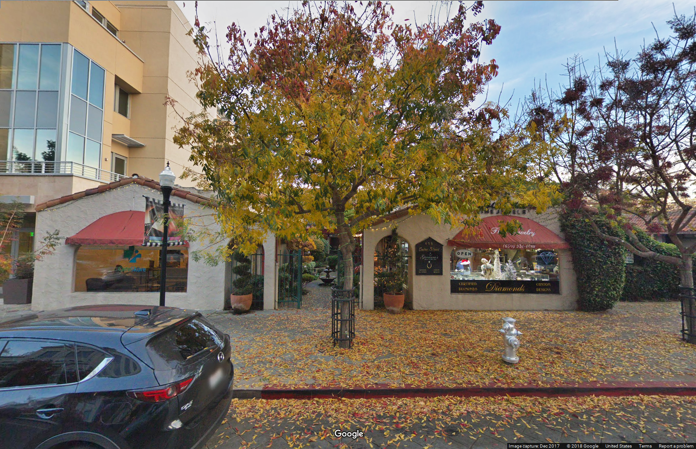

Kí sự si-li-côn
Vào một ngày cuối tháng 7, tui lang thang giữa Sài Gòn, lòng ngổn ngang đầy những mưu toan, nhầm, lo toan, và suy nghĩ , hôm đó gia đình tui nhận được visa sang Mỹ định cư.
Phần I: Đi hay ở lại?
Đang sở hữu một mức lương khá khẩm, làm một công việc đúng với mơ ước và sở thích của bản thân, cuối năm sẽ lấy vợ, cuộc sống của tui ở Đà Nẵng dường như đang đi vào quỹ đạo, lấy vợ xong thì sẽ làm gì? Xây nhà, mua xe hơi, tận hưởng cuộc sống vui thú điền viên vào tuổi 26?
- "Đang yên đang lành, đi Mỹ làm gì?"
- "Ở Việt Nam làm lập trình không sướng hay sao? Đi Mỹ làm nail chi cho uổng?"
Đâu đó trong những lời chia tay, chúc tụng từ bạn bè, là những câu nói khiến tui phải suy nghĩ. Liệu quyết định đi Mỹ là đúng hay sai? Liệu tui có còn được gắn bó với nghề lập trình khi sang Mỹ nữa hay không? Báo chí cũng nói nhiều về cuộc sống người Việt ở Mỹ, phải cày bừa làm lụng như trâu, tui đang sống sướng vầy đi Mỹ có bị ngu lắm không?
Nhưng không đi Mỹ thì tui có bị bỏ lỡ cái gì không? Vì sao nhiều người vẫn tìm đủ mọi cách để đi, còn tui thì ngồi đây mà đắn đo suy nghĩ? Thôi thì liều một phen.
Từ hôm đó, tui tranh thủ những ngày cuối cùng ở Việt Nam, lên mạng tìm hiểu thử về nghề CNTT ở đây, và apply thử một vài công ty. Trong số hơn 10 công ty tui apply vào thời điểm đó (trên AngelList), chỉ có đúng một công ty gọi tui, và gọi vào lúc 4h sáng.
Như mọi cuộc phỏng vấn khác, cuộc gọi đầu tiên chỉ là chào hỏi qua loa, sau đó tui được hẹn sang vòng coding interview trên Skype, cũng là 4h sáng một vài ngày sau đó.
Sau 2 buổi phỏng vấn thì bên phía Mỹ hoàn toàn bặt vô âm tín không còn nghe gì nữa.
15 tháng 8 năm 2015.
Tui đặt chân đến phi trường San Phran Xích Long, à nhầm, San Francisco.
Gia đình tui tá túc nhờ ở nhà cô ruột, là người đã bảo lãnh cả nhà tui đến Mỹ. Trong bữa cơm ăn mừng hội ngộ, tui đem chuyện xin việc ra để hỏi kinh nghiệm, các anh chị chỉ cười và bảo:
- "Mới qua mà lo gì sớm. Cứ ăn chơi đi, tầm tháng nữa anh chị nhờ kiếm việc cho vô làm hãng."
Tất nhiên đây là thành ý của anh chị, và tui rất cảm kích khi vừa được lo cho chỗ ở, vừa được hứa lo luôn cả công việc. Nhưng dường như đã trở thành "đường lối", bất cứ ai vừa mới đặt chân đến Mỹ cũng sẽ đi làm nail, hoặc làm hãng (là cách thường gọi của công việc assembly, lắp ráp trong nhà máy).
Để phủ đầu mọi tranh luận, tui cũng xin nói thêm, đối với tui, công việc nào cũng là công việc chân chính, làm nail hay làm hãng không có gì xấu, vì suy cho cùng, trong một xã hội tự do quá mức như ở Mỹ, kiếm ra những đồng tiền chân chính bằng sức lao động của bản thân đã là việc đáng trân trọng rồi. Tốt hơn gấp trăm nghìn lần những con người chỉ biết giả vờ đau ốm bệnh tật, sống trốn tránh và tìm mọi cách để đục khoét tiền phúc lợi xã hội của chính phủ, hoặc những con người kiếm tiền bằng cách lường gạt, bóc lột mồ hôi và nước mắt của đồng bào ở xứ người.
Sau buổi cơm, sáng hôm sau tui mở máy để tiếp tục công việc đang còn dang dở ở Việt Nam, đó là tiếp tục apply xin việc. Tất nhiên là các vị trí Software Engineer.
Suốt gần 2 tuần sau đó là chuỗi ngày dài lặp đi lặp lại giữa việc: Đi chơi , apply xin việc, chỉnh sửa CV, nghe điện thoại, phỏng vấn, rồi lại ngủ , rồi lại đi chơi,... (ace thông cảm, trái giờ mà, có thánh mới không bị jet lag).

Vấn đề lớn nhất trong các cuộc phỏng vấn không đến từ kĩ thuật, mà đến từ giao tiếp. Thứ tiếng Anh mà tui được học ở Việt Nam là thứ tiếng Anh chỉ có người Việt mới có thể nói được với nhau. Còn tui nói gì, người Mỹ họ không nghe được, họ nói gì, tui cũng để cho họ tự nghe luôn.
Ngoài chuyện đó ra, còn có một vài yếu tố khách quan như là tui chưa có đầy đủ các giấy tờ cần thiết (Social Security, thẻ xanh,...) nên ai hỏi gì tui cũng không biết, thế là họ cho rằng tui chỉ là khách du lịch, rớt .
Có những lúc tuyệt vọng, tui tưởng như tui sẽ phải buông xuôi tất cả và chấp nhận rời xa công việc mơ ước, những lúc như vậy, tui lại đi ngủ ( ae lại thông cảm, trái giờ mà).
Rồi thì công ty đã phỏng vấn lúc đang còn ở Việt Nam cũng liên lạc lại để tiếp tục phỏng vấn. Lúc này tui đã phỏng vấn tổng cộng gần 30 công ty, tính cả các buổi phỏng vấn kiểu gọi xong rớt, rớt ở vòng 2, apply xong rớt và lúc này, chỉ có 2 công ty duy nhất hẹn phỏng vấn round cuối. Sau vòng phỏng vấn technical trực tiếp tại công ty, mọi thứ diễn ra trớt lọt.
Để biết thêm chi tiết về việc phỏng vấn, các bạn có thể đọc qua bài này.

Hôm sau thì tui được gọi lên công ty để thảo luận về chuyện lương lậu. Vì là lần đầu tiên nên còn nhiều bỡ ngỡ, tui chỉ trả lời bâng quơ:
- "Tui mới đến đây lần đầu, cũng chả biết mức lương ở đây là bao nhiêu, thôi ông thích trả bao nhiêu thì trả"
Thế là ổng thích bao nhiêu ổng trả bấy nhiêu thật, kết quả là được kí hợp đồng với mức lương cao hơn sinh viên mới ra trường một tí (khoảng $85,000/năm), cùng với mấy thứ phù du ảo tưởng như unlimited vacation, stock option,...
8 tháng 9 năm 2015.
Tui thực hiện được ước mơ mà từ lâu nó chỉ là một mơ ước viễn vông, trở thành Software Engineer tại Silicon Valley.

Sau đó thì cuộc sống dần ổn định, tui thuê được nhà riêng, mua xe.
Nếu như ngày còn ở Việt Nam, tui bị đánh gục bởi nỗi sợ mơ hồ, không dám từ bỏ công việc "ổn định" và lên đường sang Mỹ, nếu như tui nghe theo những gì báo chí nói về người Việt ra nước ngoài dù có "bằng bác sĩ hay kĩ sư cũng vứt hết, đi bưng phở" không dám đi. Hay khi qua Mỹ tui không dám apply đi xin việc software chỉ "thấy ai cũng xin đi làm hãng", thì có lẽ bây giờ tui đã làm một nghề khác (có khi lương cao hơn lương kĩ sư luôn cũng có ).
Kể từ lúc đó, đối với tui, mọi lời khuyên, mọi sự ngăn cản, mọi sự định hướng đều chỉ mang tính tham khảo. Bạn ở đâu, bạn làm gì, bạn là ai và sẽ là ai, đều là quyết định của bạn.
Người ta đồn thế thôi ở nơi kia chỉ là ẩn số.
Nhưng tôi tìm thấy.
Vầng Dương vẫn chói chang.
Và tôi vươn đôi bàn tay.
...
Wait, khoan đã, nhưng dù có là trang nam tử tự tin vào chính mình, thì người tính vẫn không bằng trời tính. Để tui kể tiếp cho mà nghe.
Lúc nãy tui có nói tới unlimited vacation đúng không. Nghĩa là muốn nghỉ phép bao nhiêu cũng được.
Từ khi đi làm, cảm thấy môi trường không mấy áp lực, mặt bằng đồng nghiệp không cao mấy, vì là startup nhỏ, tui chủ quan. Làm ăn thì tà tà, không mấy năng nổ. Có unlimted vacation, mỗi lúc sáng ngủ dậy bị trễ xe bus tui cũng nghỉ, tối thức khuya xem phim, sáng ra báo nghỉ.
Rồi tui về Việt Nam chơi, nghỉ một tháng. Sau khi quay lại Mỹ khoảng 2 tuần, lại có trục trặc chuyện giấy tờ ở Việt Nam, tui báo sếp muốn nghỉ thêm 2 tuần nữa không thấy ổng nói gì.
24 tháng 2 năm 2016.
Tui bị sa thải
Môi trường làm việc ở Mỹ hoàn toàn dựa trên sự tự giác và tinh thần trách nhiệm, không giống với công việc outsourcing mà tui thường làm ở Việt Nam, ở đây không có ai suốt ngày ngồi đốc thúc, theo dõi hay giao việc, thay vào đó là phải tự giác pickup task, phân bố thời gian hợp lý, và phải luôn giữ nhịp độ đó để có thể trở thành một phần có ích cho team. Nhắt là khi đây chỉ là một công ty nhỏ.
Đây cũng là cái mà người ta vẫn gọi là "hire fast fire fast", ở đây không có chỗ cho những thành phần dư thừa, không đem lại lợi ích gì cho tập thể.
Còn ở ngoài kia thì vẫn có hàng trăm ngàn thằng kĩ sư khác từ khắp nơi đổ về, và sếp mới là người có nhiều sự lựa chọn hơn chứ không phải tui .
Và có lẽ cũng là lý do mà nhiều người nói "tư bản bóc lột", nhưng đằng sau đó là sự công bằng, kiếm tiền ở Mỹ khá dễ, mà cũng không dễ. Đó chỉ đơn giản là "thuận mua vừa bán", công sức và sự tự giác, trách nhiệm bạn bỏ ra bằng đúng với những gì bạn sẽ nhận được. Tại sao đi bưng phở thì lương thấp? Vì bạn có thể nghỉ việc bất cứ lúc nào bạn thích, bạn sẽ chỉ bị la mắng vài câu từ chủ hoặc khách, sau đó đâu lại vào đó. Tại sao nghề bác sĩ ở Mỹ lương lại cao? Vì đó là nghề mà bạn nắm giữ tính mạng của người khác trong tay, mọi hành động, quyết định của bạn đều ảnh hưởng tới mạng người, trách nhiệm của bạn cũng vì thế mà cao hơn.
Tui đã phải trả giá cho sự lầy lội của mình.
Dẹp bỏ thất bại đầu tiên qua một bên, tui lại đứng lên để làm lại từ đầu.
14 tháng 3 năm 2016.
Tui vào làm việc tại một công ty phần mềm khác. Sau khi thất nghiệp, tui lại bắt tay vào phỏng vấn xin việc, công việc thứ 2 đến cũng khá dễ dàng, sau 2 ngày tìm việc thì tui được sếp mới liên hệ và phỏng vấn, deal lương diễn ra chỉ trong 1 ngày. Mức lương vẫn như cũ. Công ty nằm trong khu công nghiệp của thành phố Fremont, chỗ này nhiều ngưwowf vẫn gọi là Silicon Valley, nhưng theo tui nó chỉ là cái mép ngoài của cái cạnh xa nhất của cái gọi là Silicon Valley .
Lúc đó tui cũng không bận tâm gì nhiều, vì bỗng dưng thất nghiệp rồi bỗng dưng được hired lại, là mừng lắm rồi.

Gần một năm sau đó, tui sống trong cảnh, sáng ngủ dậy không muốn đi làm, lê cái thân xác đến công ty và phải chịu đựng một công việc tẻ nhạt, sếp thì bóc lột ra mặt. Hằng ngày cứ vào 6h tối là ổng xách xe đi về, sau đó thì đến... 9h sẽ lên lại công ty để xem thử có thằng nào dám đi về chưa, thằng nào đi về thì bị kêu vô để kiểm tra xem đã hoàn thành công việc hay chưa
Vì sếp keo kiệt, không tuyển thêm người, nên tui vừa phải làm frontend web, vừa phải làm mobile, sau khi cậu mobile dev bức xô và bỏ việc.
Nhưng cũng nhờ vậy mà tui luyện được thêm 1 kĩ năng, hy vọng là tui sẽ không bao giờ cần phải dùng lại: Merge conflict của iOS Storyboard bằng... Vim .

Những người khác trong công ty cũng chịu chung số phận, và lão sếp thì vẫn cứ vậy, thậm chí chẳng thèm quan tâm đến nhân viên. Càng về sau, công việc làm ăn của công ty càng phát đạt, khách hàng mới thì liên tục kí thêm hợp đồng, nhưng team thì không có thêm được đứa nào. Một người phải làm một lượng công việc của 3, 4 người là chuyện cơm bữa.
Rồi thì là những request đi làm thêm vào ngày thứ 7 và chủ nhật một cách vô lý. Sếp thì hăm dọa, lấn át.
Đỉnh điểm là một lần tui chịu hết nổi và cự lại, không đồng ý chuyện đi làm ngày chủ nhật, và câu trả lời nhận được vẫn là lời hù dọa:

Và đây cũng là lúc tui tức nước vỡ bờ.
Chủ nhật, 30 tháng 10 năm 2016.
Sáng hôm đó tui quyết định không đi làm thật. Và thật là hài khi mà ông sếp kia cũng không hề biết, có nghĩa là suốt cả ngày hôm đó ổng vẫn lại không có lên công ty, giống như mọi lần khác khi mà ổng bắt cả team phải đi làm vào ngày cuối tuần.
Tui lái xe đến văn phòng vào lúc 10h tối, bật máy và xóa hết toàn bộ mọi dữ liệu cá nhân, trả lại toàn bộ máy móc và chìa khóa trên bàn làm việc, gửi một email dài cho sếp và kết thúc bằng một câu mà tui rất muốn làm từ lâu:
- "ĐẬU MÁ. TAO NỂ MÀY RỒI, ĐÉO CHỊU NỔI NỮA RỒI. TAO QUITTTTTTT!!!!!"
Rồi tắt luôn điện thoại mấy ngày sau đó .
Thế là lại rơi vào cảnh thất nghiệp, lần này thì tự nghỉ chứ chẳng chờ bị đuổi nữa
Cũng phải nói thêm, đây là một quyết định cực kì khó khăn chứ không phải là bốc đồng, khi mà chưa đầy một tháng nữa thì con trai đầu lòng của tui sẽ chào đời, còn thằng bố thì thất nghiệp .
Và cũng như lần trước, tui lại bắt tay ngay vào chuyện tìm việc. Ở Silicon Valley, thì công ty không thiếu, nhưng rút kinh nghiệm từ những lần trước đây, giai đoạn này tui bắt đầu cẩn thận hơn, tìm hiểu và suy nghĩ kĩ lưỡng hơn trước khi quyết định, và cũng tốn gần một tháng.
Kinh nghiệm, đi làm, bị đàn áp và bóc lột nơi xứ người đã giúp tui khá nhiều.
Ngày 28 tháng 11 năm 2016
Tui kí hợp đồng với một công ty startup của YCombinator, và lần này đã chính thức bước vào trung tâm của Silicon Valley, với mức lương 6 chữ số
Phần II: Things fall apart
Đây là một công ty startup nhỏ trên đường Castro Street, Mountain View (mãi sau này tui mới biết đây là một địa điểm phải tới khi ghé thăm Silicon Valley, theo lời của Paul Graham).

Đây là một startup được Y Combinator "chống lưng", trông lùi xùi vậy chứ lùi xùi thật, bên cạnh là văn phòng cùa Quora, đối diện là trụ sở WhatsApp. Công ty chi mạnh tay cho khoản bàn ghế, điển hình là tui bị choáng ngợp khi lần đầu tiên thấy cái văn phòng chưa tới 15 người nhưng có hơn 30 cái ghế Herman Miller
Thời gian làm ở đây thì tui quen khá nhiều người bạn phải nói là cực kì tốt, mà sau này còn giúp đỡ tui rất nhiều. Như một anh bạn người Pakistan, khi biết vợ tui vừa sinh bạn Evan và biết tui sắp về VN để thăm thì nghỉ luôn 2 ngày ở nhà làm đồ chơi để tặng, hay một ông chú người Hong Kong, sau khi vào làm được 3 tháng thì nghỉ để nhảy sang Google , và vì khá thân với tui, nên khi ông chú này nghỉ thì sếp vội tăng lương cho tui vì sợ tui cũng sẽ cao chạy xa bay sang thiên đường cùng ổng =))
Quèo, thực ra chuyện tăng lương ngoài lý do khách quan kể trên, thì chuyện thể hiện và cống hiến cũng đóng vai trò khá quan trọng (vớt vát lại chút ). Bài học rút ra từ lần bị đuổi việc kể trên đã giúp tui khá nhiều, tui có ghi lại về những kinh nghiệm này trong hai bài Môi trường làm việc ở Mỹ và Trung Quốc và Tản mạn về nghề đi code thuê.
Sau gần một năm làm việc tại đây, mọi thứ đều hết chỗ chê, lương cao, công việc thú vị, xung quanh toàn là bạn tốt, chuyện chẳng có gì đáng nói cho đến tháng 11. Mọi thứ diễn ra cực kì chóng vánh mà đến giờ tui cũng không tin nổi... Chỉ trong vòng 2 tuần, lần lượt 2 vị trí VP (VP of Engineering và VP of Sales) trở thành vô chủ, họ bị đuổi hay tự nghỉ? cho đến giờ không một ai biết. Tuần thứ 3, sếp gọi toàn bộ công ty vào phòng họp và thông báo:
- Chúng ta chỉ còn đủ tiền mặt trong 30 ngày
Kèm theo đó là lời hứa hẹn, trấn an về tình hình gọi vốn vòng Series A cực kì lạc quan, và nếu ai ở lại với công ty cho đến cuối tháng 12 thì sẽ nhận được khoản tiền thưởng xứng đáng, hứa hẹn nhận gấp đôi số cổ phần đang có,... cùng với một loạt sự thay đổi về nhân sự quản lý, đáng nói là trong loạt thay đổi đó có thứ mà mọi người vẫn mong chờ từ lâu: Cho phép làm Remote
Kể từ hôm đó trở đi thì mọi người dần dần không đến công ty nữa, online Slack nhiều hơn, vì còn gì tuyệt hơn chuyện được tự do làm việc tui thích mà không cần phải bước ra khỏi nhà, không cần phải tốn 2 tiếng/ngày cho việc ngồi chờ kẹt xe.
Nhưng mà lương đâu???
Sếp hẹn trễ lương một tuần, rồi hai tuần, rồi đến kì lương tiếp theo, vẫn chưa có lương kì trước hứa quài, hứa quài mà lương vẫn chưa có. Rồi thì những cái nick trên Slack cũng tắt dần, các buổi họp daily ngày một thưa dần, rồi thì tin tức kéo đến, nào là vòng Series A không diễn ra như mong đợi, sếp bắt đầu hút cỏ những cái mail đòi tiền không bao giờ nhận được hồi âm,...
Từ tháng 12 đến tháng 2 đó là chuỗi ngày đen tối của tui, khi mà tiền lương thì không có, tiền trong tài khoản ngày một vơi dần, tui lao vào chuỗi ngày phỏng vấn tìm việc và làm freelance, cũng chẳng dám nói cho ai biết, vì thực ra có nói thì cũng khiến mọi người trong gia đình lo lắng thêm. Một ngày phỏng vấn 4, 5 chỗ, apply thêm 4, 5 chỗ. Có những nơi khi mấy bạn HR niềm nở hỏi lý do rời công việc cũ, thì tui trả lời thành thật là: "Tại công ty em phá sản rồi ", thái độ của họ thay đổi một cách bất ngờ kinh nghiệm rút ra là không nên quá thật thà khi đi phỏng vấn.
Số lần bị từ chối ngày một nhiều, còn nhiều hơn cả số lần hồi âm của những công ty mà tui apply nữa, nhưng mà tui vẫn kiên trì apply tiếp, với mức lương expected không giảm mà còn cao hơn mức lương cũ và lần này quyết không nộp vào những công ty startup mà thời gian tồn tại chưa đến 3 năm tuổi (có thể mới ổn định, tui nghĩ thế), tất nhiên, cái giá phải trả cho sự ổn định mà tui mong muốn đó là cuộc chơi càng ngày càng khó, quy trình tuyển dụng gắt gao và những lần thất bại càng lúc càng cay đắng hơn, áp lực hơn, không thiếu những lần bị từ chối trong nhục nhã .
Cho đến giữa tháng 2 thì mọi nỗ lực được đền đáp, tui bước ra khỏi địa ngục với mức lương cao hơn cả mức expected (do bạn recruiter cố tình đẩy cao lên để ăn bonus ), về làm cho một công ty Israel 5 năm tuổi, có tình hình kinh doanh cực kì ổn định, mà lúc đó tui vẫn chưa biết là chỉ chưa đầy 3 tháng sau thì công ty được mua lại bởi một tập đoàn tài chính và tất thảy mọi người trong công ty không chừa một ai đều được "lên hương".
Nhưng mà có lẽ chuyện này tui sẽ kể vào một lúc nào đó, còn bây giờ thì tui hết hứng kể chuyện rồi. Tui cũng không chắc là tui có viết tiếp về chuyện này nữa không, nên thôi coi như sê-ri Kí sự Si-li-côn kết thúc tại đây. Cảm ơn các bạn đã kiên nhẫn nghe tui nói nhảm đến tận những dòng này. Chào thân ái và quyết thắng
Nếu không thích thì có thể comment